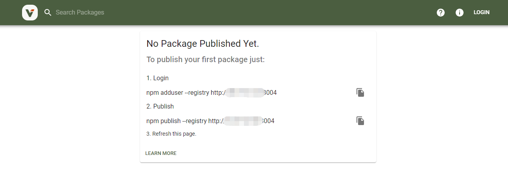
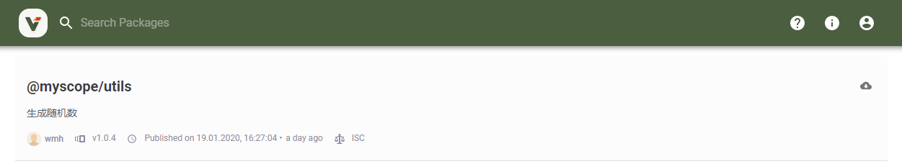

私有npm仓库搭建
概述
2020年第一篇博客，我们来探索下私有npm仓库的搭建~
在开发中经常会遇到一些公共的组件调用，将代码抽离成模块后，想通过npm进行管理，但很多时候这些代码是包含业务相关功能的，是不能对外发布的，这个时候就亟需搭建一个私有npm仓库来进行存放。
查阅资料可以发现，类似的开源库基本有以下两种： cnpm 和 sinopia(verdaccio)。本文选用的为verdaccio，它是sinopia的fork版本（sinopia2015年已经停止更新），不同于cnpm的繁琐，verdaccio基本是属于傻瓜式的操作。那么废话不多，开始搭建。
verdaccio 安装
以下所有操作是基于 CentOS Linux release 7.6.1810 进行的。
全局安装verdaccio模块
npm install -global verdaccio
如果出现报错，请使用：
npm install -global verdaccio --unsafe-perm
运行verdaccio命令（如果提示verdaccio命令不存在请先进行软连配置）
verdaccio
运行结果：
warn --- config file - /root/.config/verdaccio/config.yaml
warn --- Verdaccio started
warn --- Plugin successfully loaded: verdaccio-htpasswd
warn --- Plugin successfully loaded: verdaccio-audit
warn --- http address - http://localhost:4873/ - verdaccio/4.4.2
但此时对应的端口号开启也是无法访问的，需要再进行一下配置：
配置文件从运行结果可以看出，位于/root/.config/verdaccio/config.yaml
最底部添加监听端口：
listen: 0.0.0.0:3004
再进行访问：

ok, 安装完毕，我们开始配置（ps:如需常驻进程请用pm2 进行启动）
verdaccio 配置
首先我们对verdaccio进行配置修改，配置文件位于/root/.config/verdaccio/config.yaml
web UI 部分
webUI部分,具体可参照UI配置文档
web:
title: npm | packages and modules
primary_color: "#353535"
# comment out to disable gravatar support
# gravatar: false
# by default packages are ordercer ascendant (asc|desc)
# sort_packages: asc
# logo: http://my/logopath/logo.png
# scope: "@myscope"
整个UI是基于react进行开发的，UI源码位于:/usr/local/src/node/lib/node_modules/verdaccio/node_modules/@verdaccio/ui-theme/static下。
权限部分
我们配置的是所有人可以访问web站点，但是发布与拉取需要指定用户才可以访问(多个用户空格隔开)：
packages:
'**':
# allow all users (including non-authenticated users) to read and
# publish all packages
#
# you can specify usernames/groupnames (depending on your auth plugin)
# and three keywords: "$all", "$anonymous", "$authenticated"
access: $all
# allow all known users to publish/publish packages
# (anyone can register by default, remember?)
publish: wmh wmh1
unpublish: wmh wmh1
私有仓库的使用
verdaccio支持代理转发，通过uplinks配置可以将不存在私有仓库的包转发到指定仓库进行拉取：
uplinks:
npmjs:
url: https://registry.npm.taobao.org/
但这样，我觉得不适用公司现在的模式，于是就想到了模块的命名空间设置:
在本地进行如下操作：
将私有模块关联到指定仓库
npm config set @myscope:registry http://xx.xxx.xxx:3004向指定仓库注册账号
npm adduser --registry=http://xx.xxx.xxx:3004
此时，我们就完成了将@myscope命名空间下的插件全部设置到我们的私有仓库，其他模块仓库地址不变
除此外，还有其他操作指令:
登录指定仓库
npm login --registry=http://xx.xxx.xxx:3004
查看指定仓库当前用户名
npm whoami --registry=http://xx.xxx.xxx:3004
退出指定仓库
npm logout --registry=http://xx.xxx.xxx:3004
私有模块发布
通过一下执行发布指定命名空间下的私有模块
npm init --scope=@myscope
index.js内容如下：
(function (global, factory) {
typeof exports === 'object' && typeof module !== 'undefined' ? module.exports = factory() :
typeof define === 'function' && define.amd ? define(factory) : (global.randomNumber = factory());
})(this, function () {
function randomNumber (min, max) {
return min + Math.round(Math.random()*(max-min));
}
return randomNumber
})
再运行指令：
npm publish
这样便发布完成了

安装与使用跟正常模块无异：
npm install @myscope/utils
或
yarn add @myscope/utils
新增权限用户
如果需要新增用户，用户通过 npm addUser 指令添加注册用户后：
/root/.config/verdaccio/htpasswd文件会出现注册用户名单；编辑
/root/.config/verdaccio/config.yaml文件添加对应用户与对应权限重启verdaccio服务（切记~）
PS: 密码是通过htpasswd方式进行管理的，所以常规手段是无法重置与找回密码的，如果无法登录，只能重新添加一个用户了~
关于 htpasswd
htpasswd 是开源 http 服务器 apache httpd 的一个命令工具，用于生成 http 基本认证的密码文件,每行内容格式为“用户名:密码”，
用于用户文件的基本身份认证。默认采用MD5加密方式.